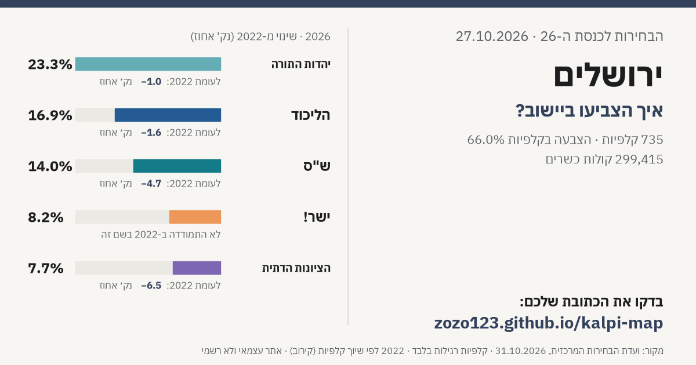

קלפיות ותוצאות לפי כתובת › יישובים › ירושלים
איך הצביעו בירושלים?
בירושלים היו 455,862 בעלי זכות בחירה ב-735 קלפיות רגילות. הצביעו 300,647 (אחוז הצבעה בקלפיות 66.0%, ללא מעטפות כפולות); 299,415 קולות כשרים ו-1,232 פסולים. הרשימה הגדולה ביישוב: יהדות התורה עם 23.3% מהקולות הכשרים.
חפשו את הכתובת שלכם בירושלים ←
התוצאות בירושלים
| רשימה | 2026 | קולות | 2022 | שינוי (נק׳) | |
|---|---|---|---|---|---|
| יהדות התורה | 23.3% | 69,629 | 24.3% | -1.0 | |
| הליכוד | 16.9% | 50,648 | 18.5% | -1.6 | |
| ש"ס | 14.0% | 41,794 | 18.6% | -4.7 | |
| ישר! | 8.2% | 24,486 | — | ||
| הציונות הדתית | 7.7% | 22,917 | 14.1% | -6.5 | |
| עוצמה יהודית | 6.5% | 19,409 | — | ||
| הדמוקרטים | 5.3% | 15,794 | — | ||
| ביחד | 4.7% | 14,152 | — | ||
| הרשימה המשותפת | 4.0% | 11,831 | — | ||
| ישראל ביתנו | 2.5% | 7,460 | 1.8% | +0.7 | |
| עמך ישראל | 1.9% | 5,609 | — | ||
| המילואימניקים והכלכלית | 1.8% | 5,498 | — | ||
| אחרות (מתחת ל-1%) | 3.4% | 10,188 |
שתפו
לפי שכונה
| שכונה | קולות כשרים 2026 | הרשימה הגדולה | אחוז |
|---|---|---|---|
| רמות | 26,015 | יהדות התורה | 42.7% |
| פסגת זאב | 23,546 | הליכוד | 32.0% |
| גילה | 16,527 | הליכוד | 34.8% |
| קריית היובל | 14,120 | הליכוד | 20.7% |
| חומת שמואל (הר חומה) | 12,911 | הליכוד | 38.2% |
| בית הכרם | 11,147 | ישר! | 22.9% |
| גוננים (קטמונים) | 11,022 | הליכוד | 30.6% |
| נווה יעקב | 10,674 | יהדות התורה | 54.0% |
| רמת שלמה | 9,708 | יהדות התורה | 60.0% |
| קטמון הישנה | 9,026 | ישר! | 18.9% |
| מעלות דפנה | 8,619 | הרשימה המשותפת | 54.5% |
| בית וגן | 8,484 | יהדות התורה | 38.2% |
| הר נוף | 8,146 | יהדות התורה | 53.1% |
| תלפיות | 7,458 | הליכוד | 25.2% |
| תלפיות מזרח | 7,440 | הליכוד | 31.5% |
| רחביה | 6,715 | הדמוקרטים | 21.1% |
| גבעת שאול | 6,648 | יהדות התורה | 42.1% |
| שמואל הנביא | 6,090 | יהדות התורה | 52.5% |
| אזור תעשייה רוממה | 5,992 | יהדות התורה | 77.8% |
| מקור ברוך | 5,621 | יהדות התורה | 68.0% |
| בקעה | 4,842 | הליכוד | 17.2% |
| קריית משה | 4,613 | הציונות הדתית | 28.8% |
| עיר גנים | 3,790 | הליכוד | 35.4% |
| קריית בעלזא | 3,757 | יהדות התורה | 92.3% |
| רמת שרת | 3,653 | הליכוד | 20.1% |
| תל ארזה, עזרת תורה | 3,589 | יהדות התורה | 74.5% |
| מרכז העיר | 3,382 | הליכוד | 19.8% |
| בית ס'פאפא | 3,353 | הרשימה המשותפת | 81.6% |
| גבעת מרדכי | 3,273 | הציונות הדתית | 24.8% |
| גבעת שפירא (הגבעה צרפתית) | 3,034 | יהדות התורה | 15.7% |
| רמת אשכול | 2,845 | יהדות התורה | 51.6% |
| מנחת (מלחה) | 2,843 | הליכוד | 35.1% |
| מחנה יהודה (לב העיר) | 2,636 | יהדות התורה | 28.6% |
| קריית מנחם | 2,551 | הליכוד | 33.2% |
| גבעת משואה | 2,515 | הליכוד | 26.5% |
| סנהדריה | 2,427 | יהדות התורה | 72.8% |
| ארנונה | 2,421 | הליכוד | 32.9% |
| קריית הלאום | 2,276 | הליכוד | 25.5% |
| גבעת הוורדים | 2,145 | ישר! | 22.1% |
| קוממויות (טלביה) | 2,009 | הדמוקרטים | 19.8% |
| נחלאות, שערי חסד | 1,877 | הליכוד | 18.2% |
| מורשה | 1,875 | יהדות התורה | 50.9% |
| הרובע הנוצרי | 1,607 | הרשימה המשותפת | 56.8% |
| מקור חיים | 1,552 | הליכוד | 30.0% |
| זיכרון משה | 1,520 | יהדות התורה | 50.7% |
| הרובע היהודי | 1,478 | יהדות התורה | 37.7% |
| עמק רפאים (המושבה הגרמנית) | 1,402 | ישר! | 24.3% |
| רמות רחל (ארנונה החדשה) | 1,369 | הליכוד | 23.9% |
| החבשים | 1,331 | יהדות התורה | 67.0% |
| ארזי הבירה | 1,262 | יהדות התורה | 50.9% |
| גבעת חנניה (אבו תור) | 1,168 | הדמוקרטים | 17.0% |
| ס'ור באהר | 1,039 | הרשימה המשותפת | 83.3% |
| עין כרם | 999 | הדמוקרטים | 31.2% |
| הבוכרים | 995 | יהדות התורה | 76.6% |
| פת | 807 | הליכוד | 41.0% |
| רמת מוצא | 491 | ישר! | 29.1% |
יישובים נוספים
- תל אביב - יפו
- חיפה
- ראשון לציון
- נתניה
- פתח תקווה
- אשדוד
- באר שבע
- חולון
- רמת גן
- אשקלון
- בת ים
- בני ברק
- רחובות
- בית שמש
- הרצליה
- חדרה
- כפר סבא
- מודיעין-מכבים-רעות
- רעננה
- לוד
- רמלה
- נהריה
- נצרת
- אילת
- ראש העין
- הוד השרון
- קרית גת
- גבעתיים
- עפולה
- קרית אתא
- עכו
- רהט
- קרית מוצקין
- כרמיאל
- נוף הגליל
- אום אל-פחם
- רמת השרון
- יבנה
- קרית ים
- קרית ביאליק
- מודיעין עילית
- טבריה
- נס ציונה
- קרית אונו
- פרדס חנה-כרכור
- נתיבות
- ביתר עילית
- טייבה
- שפרעם